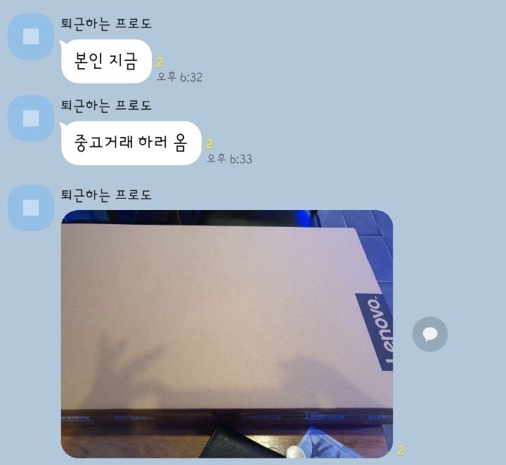

김모씨 일베 의혹

2020년 1월 10일 오후 6시 30분 경, 김모씨는 자신이 중고거래를 하러왔다며 한 사진을 업로드 했습니다.
이 사진은 평범한 상자 사진으로 보이지만 상당히 충격적인 것이 숨어있었습니다.
이 손모양은
일간베스트를 상징하는 손모양과 아주 흡사합니다.
현재 김모씨는 이와 같은 사실을 부정하고 있으며 묵비권을 행사하고 있습니다.
시민들은 모두 '충격적이다' 라는 반응을 보이고 있습니다.
전문가들은 저 손모양은 일베의 손모양이 맞다고 분석했습니다.
한시라도 빨리 김모씨를 구속하여 죄를 물어야합니다.
한국사회 진실추적부 윤동현 기자 by606700@naver.com